자동차정비기사 (2016-03-06 기출문제)
1과목: 일반기계공학
1. 피복 아크 용접에서 피복제의 역할이 아닌 것은?
- 아크를 안정시킨다.
- 용착금속을 보호한다.
- 급랭을 막아 조직을 좋게 한다.
- 고주파 발생을 억제한다.
(정답률: 67%)

2. 다음 단면의 모양 중 외팔보에서 처짐량이 가장 작은 것은? (단, 단면적은 모두 동일하고 작용하중이나 재질 및 길이는 같다고 가정한다.)
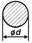
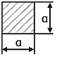
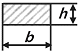
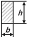
(정답률: 49%)
3. 영 계수(Young's modulus)에 대한 설명으로 가장 옳은 것은?
- 비례한도 내에서 응력-변형률 선도의 기울기를 의미한다.
- 고무와 같이 늘어나기 쉬운 재료는 비교적 큰 값을 가진다.
- 변형률을 수직응력으로 나눈 값이다.
- 하중을 단면적으로 나눈 값이다.
(정답률: 50%)
4. 원형 봉의 양단에 나사를 가공한 것으로 볼트의 머리가 없고 한쪽은 탭 볼트의 형태와 같으며, 한쪽은 머리가 없는 대신 나사부에 너트를 끼워서 죌 수 있도록 한 볼트로 부품을 자주 분해할 경우 사용하는 것은?
- 관통 볼트
- 스터드 볼트
- 스테이 볼트
- 턴버클 볼트
(정답률: 58%)
5. 제작하려는 주물과 동일한 모형을 왁스 또는 파라핀을 만들어 주형재에 매몰하고 주형을 가열 경화시키며 모형을 유출하여 주형을 오나성하므로 정밀한 주조를 할 수 있는 것은?
- 인베스트먼트법
- 셀몰딩법
- 다이캐스팅법
- 이산화탄소법
(정답률: 56%)
6. 일반 주철에 관한 설명으로 틀린 것은?
- Fe-C 합금에서 C의 함량이 2.11~6.67%인 것을 말한다.
- 철강과 비교하여 단련이 우수하다.
- 철강에 비하여 인성이 낮고 매짐성이 크다.
- 철강보다 용융점이 낮아 주조성이 우수하다.
(정답률: 61%)
7. 그림과 같이 도시된 유압 밸브 기호의 명칭은?
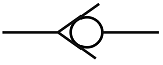
- 체크 밸브
- 셔틀 밸브
- 감속 밸브
- 릴리프 밸브
(정답률: 56%)
8. 그림에서 단면적 A1은 100cm2, 단면적 A2는 600cm2이고, A1부분에 작용하는 실린더 작용력 P1은 200kN일 때 A2부분의 실린더가 발생하는 힘 P2는 약 몇 kN인가? (단, 그림과 같이 두 공간 사이에는 유압 작동유가 가득 차 있다고 가정한다.)
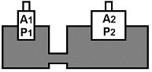
- 20
- 1200
- 2000
- 12000
(정답률: 59%)
9. 중실축에서 동일한 비틀림 모멘트를 작용시킬 때 지름이 2배가 증가하면 저장되는 탄성에너지는 증가하기 전 탄성에너지에 비해 얼마로 변하는가?
- 1/2
- 1/4
- 1/8
- 1/16
(정답률: 42%)
10. 다음 중 두 축이 평행하지도 교차하지도 않는 기어는?
- 웜 기어
- 베벨 기어
- 헬리컬 기어
- 제롤 베벨 기어
(정답률: 54%)
11. 미터계열 사다리꼴나사의 나사산 각도는 몇 도인가?
- 29°
- 30°
- 58°
- 60°
(정답률: 47%)
12. 축의 회전에 의해 동력을 전달하는 축으로 주로 비틀림 모멘트를 받는 축의 명칭으로 가장 적합한 것은?
- 중공축
- 크랭크축
- 전동축
- 플랙시블축
(정답률: 49%)
13. 다음 중 미소 이동량의 확대 지시장치로 레버(lever)를 이용하는 측정기는?
- 마이크로미터
- 다이얼게이지
- 미니미터
- 볼트미터
(정답률: 58%)
14. 그림과 같은 블록 브레이크에서 드럼 축의 레버를 누르는 힘(F)을 우회전할 때는 F1, 좌회전 할 때의 힘(F)을 F2라고 하면 F1/F2의 값은 얼마인가? (단, a는 800㎜, b는 400㎜이며, 두 경우 모두 동일한 제동력을 발생시키는 것을 가정한다.)
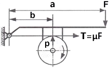
- 0.25
- 0.5
- 1
- 4
(정답률: 38%)
15. 보온 재료들 중 무기질 보온 재료로 내열성이 있는 것은?
- 코르크
- 면화
- 펄프
- 유리섬유
(정답률: 69%)
16. 센터리스 연삭작업에서 공작물의 1회전마다의 이송량이 3㎜일 때 이송 속도는 약 몇 m/min인가? (단, 공작물의 회전수는 2000rpm이다.)
- 8
- 7
- 6
- 5
(정답률: 47%)
17. 열응력에 영향을 미치는 주요 인자가 아닌 것은?
- 소재의 지름
- 선팽창계수
- 세로 탄성계수
- 온도 차
(정답률: 50%)
18. 기어 펌프의 이송 체적이 3.0cm3/rev이고, 회전수가 1500rpm일 때 이 펌프의 이론 토출량은 약 몇 L/min인가?
- 4500
- 4.5
- 500
- 0.5
(정답률: 56%)
19. 다음 중 청동이라고 하면 어떤 합금을 말하는가?
- Cu-Zn
- Cu-Mn
- Cu-Si
- Cu-Sn
(정답률: 40%)
20. 단조를 열간 단조와 냉간 단조로 분류할 때 냉간 단조에 해당되지 않는 것은?
- 해머 단조(hammer forging)
- 콜드 헤딩(cold heading)
- 스웨이징(swaging)
- 코이닝(coining)
(정답률: 45%)
2과목: 기계열역학
21. 계가 비가역 사이클을 이룰 때 클라우지우스(Clausius)의 적분을 옳게 나타낸 것은? (단, T는 온도, Q는 열량이다.)
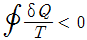
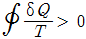
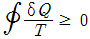
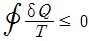
(정답률: 40%)
22. 한 시간에 3600kg의 석탄을 소비하여 6⑤0kW를 발생하는 증기터빈을 사용하는 화력발전소가 있다면, 이 발전소의 열효율은 약 몇 %인가? (단, 석탄의 발열량은 29900kJ/kg이다.)
- 약 20%
- 약 30%
- 약 40%
- 약 50%
(정답률: 35%)
23. 밀폐 시스템이 압력 P1=200kPa, 체적 V1=0.1m3인 상태에서 P2=100kPa, V2=0.3m3인 상태까지 가역팽창 되었다. 이 과정이 P-V 선도에서 직선으로 표시된다면 이 과정 동안 시스템이 한 일은 약 몇 kJ인가?
- 10
- 20
- 30
- 45
(정답률: 48%)
24. 온도 600 ℃의 구리 7kg을 8kg의 물속에 넣어 열적 평형을 이룬 후 구리와 물의 온도가 64.2 ℃가 되었다면 물의 처음 온도는 약 몇 ℃인가? (단, 이 과정 중 열손실은 없고, 구리의 비열은 0.386kJ/kg·K이며 물의 비열은 4.184kJ/kg·K이다.)
- 6 ℃
- 15℃
- 21℃
- 84℃
(정답률: 30%)
25. 4kg의 공기가 들어 있는 용기 A(체적 0.5m3)와 진공 용기 B(체적 0.3m3) 사이를 밸브로 연결하였다. 이 밸브를 열어서 공기가 자유팽창 하여 평형에 도달했을 경우 엔트로피 증가량은 약 몇 kJ/K인가? (단, 온도 변화는 없으며 공기의 기체상수는 0.287kJ/kg·K이다.)
- 0.54
- 0.49
- 0.42
- 0.37
(정답률: 41%)
26. 여름철 외기의 온도가 30℃일 때 김치 냉장고의 내부를 5℃로 유지하기 위해 3kW의 열을 제거해야 한다. 필요한 최소 동력은 약 몇 kW인가? (단, 이 냉장고는 카르노 냉동기이다.)
- 0.27
- 0.54
- 1.54
- 2.73
(정답률: 42%)
27. 비열비가 1.29, 분자량이 44인 이상 기체의 정압비열은 약 몇 kJ/kg·K인가? (단, 일반기체상수는 8.314kJ/kmol·K이다.)
- 0.51
- 0.69
- 0.84
- 0.91
(정답률: 32%)
28. 랭킨 사이클의 열효율 증대 방법에 해당하지 않는 것은?
- 복수기(응축기) 압력 저하
- 보일러 압력 증가
- 터빈의 질량유량 증가
- 보일러에서 증기를 고온으로 과열
(정답률: 44%)
29. 체적이 0.01m3인 밀폐용기에 대기압의 포화혼합물이 들어있다. 용기 체적의 반은 포화액체, 나머지 반은 포화증기가 차지하고 있다면, 포화혼합물 전체의 질량과 건도는? (단, 대기압에서 포화액체와 포화증기의 비체적은 각각 0.001044m3/kg, 1.6729m3/kg이다.)
- 전체질량 : 0.0119kg, 건도 : 0.50
- 전체질량 : 0.0119kg, 건도 : 0.00062
- 전체질량 : 4.792kg, 건도 : 0.50
- 전체질량 : 4.792kg, 건도 : 0.00062
(정답률: 34%)
30. 준평형 정적과정을 거치는 시스템에 대한 열전달량은? (단, 운동에너지와 위치에너지의 변화는 무시한다.)
- 0이다.
- 이루어진 일량과 같다.
- 엔탈피 변화량과 같다.
- 내부에너지 변화량과 같다.
(정답률: 48%)
31. 증기 압축 냉동기에서 냉매가 순환되는 경로를 올바르게 나타낸 것은?
- 증발기 → 팽창밸브 → 응축기 → 압축기
- 증발기 → 압축기 → 응축기 → 팽창밸브
- 팽창밸브 → 압축기 → 응축기 → 증발기
- 응축기 → 증발기 → 압축기 → 팽창밸브
(정답률: 59%)
32. 내부에너지가 40kJ, 절대압력이 200kPa, 체적이 0.1m3, 절대온도가 300K인 계의 엔탈피는 약 몇 kJ인가?
- 42
- 60
- 80
- 240
(정답률: 46%)
33. 랭킨 사이클을 구성하는 요소는 펌프, 보일러, 터빈, 응축기로 구성된다. 각 구성 요소가 수행하는 열역학적 변화 과정으로 틀린 것은?
- 펌프 : 단열압축
- 보일러 : 정압가열
- 터빈 : 단열팽창
- 응축기 : 정적냉각
(정답률: 55%)
34. 다음 중 폐쇄계의 정의를 올바르게 설명한 것은?
- 동작물질 및 일과 열이 그 경계를 통과하지 아니하는 특정 공간
- 동작물질은 계의 경계를 통과할 수 없으나 열과 일은 경계를 통과할 수 있는 특정 공간
- 동작물질은 계의 경계를 통과할 수 있으나 열과 일은 경계를 통과할 수 없는 특정 공간
- 동작물질 및 일과 열이 모두 그 경계를 통과할 수 있는 특정 공간
(정답률: 50%)
35. 고온 400℃, 저온 50℃의 온도 범위에서 작동하는 Carnot 사이클 열기관의 열효율을 구하면 몇 %인가?
- 37
- 42
- 47
- 52
(정답률: 43%)
36. 물 2Kg을 20℃에서 60℃가 될 때까지 가열할 경우 엔트로피 변화량은 약 몇 kJ/kg·K인가? (단, 물의 비열은 4.184kJ/kg·K이고, 온도 변화과정에서 체적은 거의 변화가 없다고 가정한다.)
- 0.78
- 1.07
- 1.45
- 1.96
(정답률: 36%)
37. 질량이 m이고 비체적이 v인 구(sphere)의 반지름이 R이면, 질량이 4m이고, 비체적이 2v인 구의 반지름은?
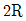
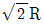
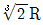
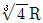
(정답률: 44%)
38. 2개의 정적과정과 2개의 등온과정으로 구성된 동력 사이클은?
- 브레이턴(brayton)사이클
- 에릭슨(ericsson)사이클
- 스털링(stirling)사이클
- 오토(otto)사이클
(정답률: 34%)
39. 실린더 내부에 기체가 채워져 있고 실린더에는 피스톤이 끼워져 있다. 초기 압력 50kPa, 초기체적 0.⑤m3인 기체를 버너로 PV1·4=Constant가 되도록 가열하여 기체 체적이 0.2m3이 되었다면, 이 과정 동안 시스템이 한 일은?
- 1.33kJ
- 2.66kJ
- 3.99kJ
- 5.32kJ
(정답률: 34%)
40. 기체가 열량 80kJ을 흡수하여 외부에 대하여 20kJ의 일을 하였다면 내부에 너지 변화는 몇 kJ인가?
- 20
- 60
- 80
- 100
(정답률: 49%)
3과목: 자동차기관
41. 가솔린 기관 연료의 구비조건으로 틀린 것은?
- 체적 및 무게가 적고 발열량이 클 것
- 착화점이 낮아서 연소가 쉽게 될 것
- 온도에 관계없이 유동성이 좋을 것
- 연소 속도가 빠를 것
(정답률: 65%)
42. 가솔린 기관의 전동식 연료펌프를 설명하는 것으로 틀린 것은?
- 연료탱크에서 연료분사장치로 연료를 공급한다.
- 체크밸브는 재시동성 향상을 위해 시동정지 후에도 압력을 유지한다.
- 기관이 정지된 상태에서 점화스위치 IG(ON)이면 연료펌프는 구동한다.
- 릴리프 밸브는 라인 내 압력이 규정값 이상으로 상승되는 것을 방지한 다.
(정답률: 58%)
43. 피스톤과 실린더 간극이 클 때 일어나는 사항이 아닌 것은?
- 압축압력이 저하된다.
- 오일이 연소실로 올라온다.
- 피스톤 슬랩 현상이 발생한다.
- 피스톤과 실린더의 소결이 발생한다.
(정답률: 75%)
44. LPI 기관의 연료장치 주요 구성품으로 틀린 것은?
- 연료 펌프
- 모터 컨트롤러
- 연료 레귤레이터 유닛
- 베이퍼라이져
(정답률: 72%)
45. 가솔린 기관에서 저온 시동성 향상과 관계가 있는 센서는?
- 대기압 센서
- 흡입공기량 센서
- 산소 센서
- 냉각수온 센서
(정답률: 65%)
46. 총배기량 1800cc인 기관의 회전 저항 토크가 6kgf·m일 때 기동전동기의 피니언기어 잇수가 12, 기관의 플라이휠의 링기어 잇수가 120이라면 이 기관을 기동하는데 필요한 기동전동기의 최소 회전 토크는?
- 0.45kgf·m
- 0.60kgf·m
- 0.75kgf·m
- 0.90kgf·m
(정답률: 56%)
47. 연소실에서 일어나는 혼합기 와류에 대한 설명으로 틀린 것은?
- 흡입 시 발생되는 전류에 의한 와류
- 흡기행정 중 공기가 유입될 때 형성되는 와류
- 피스톤 형상에 의해 형성되는 와류
- 연소 초기의 압력차에 의한 와류
(정답률: 67%)
48. 400m의 구간을 통과하는데 20초가 걸리는 자동차의 연료소비량은 40cc이었다. 차속과 연료소비율은 각각 얼마인가?
- 차속 : 52km/h, 연료소비율 : 11km/ℓ
- 차속 : 52km/h, 연료소비율 : 10km/ℓ
- 차속 : 72km/h, 연료소비율 : 11km/ℓ
- 차속 : 72km/h, 연료소비율 : 10km/ℓ
(정답률: 56%)
49. 자동차 배출가스의 유해성분에 대한 설명으로 틀린 것은?
- 질소산화물 : 광화학 스모그의 원인이 된다.
- 흑연 : 소화기 및 근육신경에 장애를 준다.
- 일산화탄소 : 산소부족 증상이 나타난다.
- 탄화수소 : 호흡기에 자극을 주고 점막이나 눈을 자극한다.
(정답률: 75%)
50. 자동차기관의 밸브 기구에서 점검해야 할 부위로 거리가 먼 것은?
- 마진(margin)의 두께
- 베어링과 저널의 간극
- 밸브 스프링의 장력
- 스템 엔드(stem end)의 마모상태
(정답률: 55%)
51. 자동차기관에 사용되는 윤활유에 대한 내용으로 틀린 것은?
- 유동점이 높을수록 좋다.
- 유체를 이동시킬 때에 나타나는 내부저항을 점도라 한다.
- 점도지수가 높은 윤활유는 온도에 따른 점도 변화가 적다.
- 윤활유의 유성이 크면 경계마찰을 감소시키는 효과가 크다.
(정답률: 60%)
52. 디젤기관의 고압연료분사장치에서 노크를 최소화하기 위해 초기 분사량을 최소화하고 착화 이후의 분사량을 크게 하도록 설계된 분사노즐은?
- 원통형 핀틀 노즐
- 스로틀형 노즐
- 단공 홀 노즐
- 다공 홀 노즐
(정답률: 58%)
53. 실린더 블록에 설치되어 압전소자를 이용하여 기관의 진동을 감지하는 센서는?
- 크랭크 각 센서
- 맵 센서
- 산소 센서
- 노크 센서
(정답률: 76%)
54. 가솔린기관의 열역학적 기본 사이클은?
- 정압 사이클
- 정적 사이클
- 랭킨 사이클
- 복합 사이클
(정답률: 69%)
55. 가솔린기관과 비교한 디젤기관의 장점은?
- 열효율이 좋다.
- 매연 발생이 적다.
- 기관의 최고 속도가 높다.
- 마력 당 기관의 중량이 무겁다.
(정답률: 69%)
56. 가솔린기관에서 연소실 내부의 온도를 낮추어 질소산화물(NOx) 생성을 감소시키는데 관계가 있는 것은?
- 인젝터
- 파워 TR
- 인히비터 스위치
- EGR 밸브
(정답률: 74%)
57. 공기과잉률 람다(λ)에 관한 설명으로 틀린 것은?
- 람다(λ) 값은 1을 기준으로 한다.
- 람다(λ) 값이 클수록 혼합비가 희박하다.
- 람다(λ) 값이 1보다 낮을수록 CO와 HC가 많이 배출된다.
- 람다(λ)는 이론공연비를 실제 흡입공기량으로 나눈 값이다.
(정답률: 52%)
58. 가솔린기관에서 열선식 공기유량 센서가 흡입공기량을 감지하는 방법은?
- 소비 전류의 변화에 따른 전압 차이 감지
- 포텐셔미터를 이용하여 저항 변화를 감지
- 흡입되는 공기의 와류를 초음파로 감지
- 흡입 다기관 내의 압력 변화를 감지
(정답률: 57%)
59. 디젤기관에서 착화지연에 영향을 주는 인자와 가장 거리가 먼 것은?
- 공연비
- 연료 입자의 크기
- 연료의 분무상태
- 분사 개시점 연소실 내 공기의 온도와 압력
(정답률: 72%)
60. 전자제어 가솔린기관에서 분사량 보정 내용으로 틀린 것은?
- 엔진회전수가 과도할 때
- 냉각수 온도에 따라
- 흡기온도에 따라
- 가속 및 전부하 시
(정답률: 34%)
4과목: 자동차새시
61. 고속으로 회전하는 회전체는 그 회전축을 일정하게 유지하려는 성질이 있다. 이 성질은 무엇인가?
- NTC 효과
- 피에조 효과
- 자이로 효과
- 자기 유도 효과
(정답률: 72%)
62. 공기 현가장치의 특징이 아닌 것은?
- 구조가 간단하고, 정비하기 쉽다.
- 하중에 상관없이 차체의 높이를 항상 일정하게 유지할 수 있다.
- 하중에 상관없이 스프링의 고유 진동수를 일정하게 유지할 수 있다.
- 공기 스프링 자체에 감쇄성이 있어 작은 진동을 흡수하는 효과가 있다.
(정답률: 59%)
63. 종감속 기어 중 하이포이드 기어의 장점이 아닌 것은?
- 추진축의 높이를 낮출 수 있어 자동차의 중심을 낮게 할 수 있다.
- 스파이럴 베벨기어에 비해 구동 피니언을 크게 할 수 있어 강도가 증대된다.
- 기어 이의 폭 방향으로 미끄럼 접촉을 하므로 저압윤활유 사용이 가능 하다.
- 기어의 물림이 커 회전이 정숙하다.
(정답률: 67%)
64. 유압 파워 스티어링을 장착한 공회전 상태의 차량에서 조향휠을 한쪽으로 완전히 돌렸을 때 RPM이 떨어질 수 있는 원인으로 가장 적합한 것은?
- 엔진 오일 부족
- 파워 스티어링 오일 변색
- 파워 스티어링 오일 과소
- 파워 스티어링 오일압력 스위치 단선
(정답률: 60%)
65. 타이어의 구조에서 직접 노면과 접촉되어 마모에 견디고 견인력을 좋게 하는 것은?
- 트레드
- 브레이커
- 카커스
- 비드
(정답률: 71%)
66. 타이어 반경이 0.5m인 자동차가 회전수 500rpm으로 주행할 때, 회전력이 90kgf·m 이라면 이 자동차의 구동력은 얼마인가?
- 50kgf
- 100kgf
- 180kgf
- 260kgf
(정답률: 35%)
67. 자동차변속기 차량에서 오버 드라이브로 주행할 때 장점으로 거리가 먼 것은?
- 연료가 절약된다.
- 타이어의 마모가 적게 된다.
- 엔진의 운전이 조용하게 된다.
- 엔진의 수명이 연장된다.
(정답률: 63%)
68. 유압식 전자제어 조향장치의 종류가 아닌 것은?
- 유량 제어식
- 실린더 바이패스 제어식
- 유압 반력 제어식
- 칼럼 구동 제어식
(정답률: 52%)
69. 수동변속기의 싱크로메시 기구에 대한 설명 중 옳은 것은?
- 기어의 이중 물림을 방지한다.
- 상대기어를 동기화 시켜 기어물림을 원활하게 한다.
- 회전력을 증가 시키는 역할을 한다.
- 운행 중 기어의 빠짐을 방지한다.
(정답률: 69%)
70. 차체자세제어장치(Vehicle Dynamic Control System)의 센서 입력 요소가 아닌 것은?
- 요레이트 센서
- TPMS 센서
- 마스터 실린더 압력 센서
- 조향휠 각속도 센서
(정답률: 60%)
71. 전자제어 현가장치에서 선회 주행 시 원심력에 의한 차체의 흔들림을 최소로 하여 안전성을 개선하는 제어기능은?
- 앤티 스쿼트
- 앤티 다이브
- 앤티 롤링
- 앤티 드라이브
(정답률: 64%)
72. 자동차 등록번호판의 부착 방법에 대한 설명으로 틀린 것은?
- 뒤쪽 등록번호판의 설치 높이는 650㎜ 이하일 것
- 차량중심선을 기준으로 등록번호판의 좌우가 대칭일 것
- 자동차의 앞쪽에 부착하는 등록번호판의 접합 부분은 볼트로만 체결할 것
- 자동차의 앞쪽과 뒤쪽에서 볼 때 차체의 다른 부분이나 장치 등에 의하여 등록번호판이 가려지지 아니할 것
(정답률: 42%)
73. 브레이크 드럼의 일반적인 점검사항이 아닌 것은?
- 드럼의 진원도
- 드럼의 두께
- 드럼의 직경차
- 드럼의 마찰계수
(정답률: 47%)
74. 전자제어 제동장치(ABS) 컨트롤 유닛의 출력 요소가 아닌 것은?
- 모터 릴레이
- 휠스피드 센서
- 솔레노이드 밸브
- 경고등
(정답률: 77%)
75. 브레이크 시스템에 관한 설명으로 틀린 것은?
- 잔압 밸브는 계통 내에 잔압을 유지시켜 베이퍼록을 방지한다.
- 앞, 뒤 디스크 브레이크를 사용하는 형식에서는 자기작동을 하지 못한 다.
- 텐덤 마스터 실린더의 사용 목적은 브레이크 각 회로의 독립성을 위함이다.
- 트레일링 슈는 자기작동을 한다.
(정답률: 49%)
76. 자동차가 600m의 비탈길을 올라가는데 3분, 내려가는데 1분 걸렸다면 평균 속도는?
- 15km/h
- 16km/h
- 17km/h
- 18km/h
(정답률: 45%)
77. 자동차 선회 주행 시 앞바퀴의 조향각에 의한 선회반경보다 실제 선회반경이 작은 것은?
- 오버 스티어링
- 언더 스티어링
- 리버스 스티어링
- 토크 스티어링
(정답률: 66%)
78. 드럼의 회전 방향에 따라 고정측이 바뀌어 전진 또는 후진에서 모두 자기 작동 작용을 하는 브레이크슈의 구성은?
- 복동 2리딩 슈방식
- 넌 서보형
- 유니 서보형
- 듀오 서보형
(정답률: 63%)
79. 파워 모드와 노말 모드가 있는 전자제어 자동변속기 차량에서 파워 모드에 대한 설명으로 가장 적합한 것은?
- 록업 클러치를 우선 작동시킨다.
- 기관 ECU에 연료 분사량의 증량 요구 신호를 보내 출력을 높인다.
- 차량의 속도를 증속모드로 변환 시킨다.
- 동일한 스로틀 개도일 때 노멀 모드에 비해 높은 차속에서 변속을 행한다.
(정답률: 55%)
80. 무단변속기의 설명으로 틀린 것은?
- 변속비를 만들 때는 6개 풀리의 직경 변화를 이용한다.
- 풀리의 직경이 적을수록 마찰 손실이 커진다.
- 전달 효율이 높은 체인벨트를 사용하면 소음에서 불리하다.
- 풀리 사이의 마찰력으로 동력을 전달하므로 미끄럼을 최소화하여야 한다.
(정답률: 50%)
5과목: 자동차전기
81. 자동차 납산 배터리의 자기방전에 대한 설명으로 틀린 것은?
- 양극판은 과산화납으로 음극판은 해면상납이 되면서 방전된다.
- 전해액 중에 불순물이 혼입되어 국부 전지가 형성되었을 때 방전된다.
- 탈락한 작용물질이 극판의 아래 부분이나 측ㅂ면에 퇴적되었을 때 방전된다.
- 배터리 케이스의 표면에 부착된 전해액이나 먼지 등에 의한 누전으로 방전된다.
(정답률: 64%)
82. 자동차 전기 배선에 대한 설명 중 틀린 것은?
- 배선의 지름이 증가하면 저항을 줄어든다.
- 배선의 길이가 2배로 증가하면 저항도 2배로 증가한다.
- 보통의 금속은 일반적으로 온도 상승에 따라 저항도 증가한다.
- 배선의 지름을 2배로 증가시키면 저항값은 3배 감소한다.
(정답률: 61%)
83. 디젤기관에서 예열플러그가 단선되는 주요 원인으로 틀린 것은?
- 기관 출력이 감소 될 때
- 예열시간이 너무 길 때
- 규정 값 이상의 과대전류가 흐를 때
- 예열플러그 릴레이 접점이 고착 되었을 때
(정답률: 64%)
84. 자동차 등화장치 중 등광색을 황색으로 할 수 있는 것은?
- 전조등
- 안개등
- 후퇴등
- 차폭등
(정답률: 46%)
85. 전자제어 엔진의 점화계통에 해당되지 않는 것은?
- 점화코일
- 파워 트랜지스터
- 체크밸브
- 크랭크 앵글 센서
(정답률: 68%)
86. 자동차에서 암전류를 측정하는 방법 중 틀린 것은?
- 측정 전 모든 전기장치를 OFF하고 차량의 문을 닫는다.
- 배터리(-)터미널을 탈거한 후 전류계를 회로와 직렬로 연결한다.
- 전류를 측정하려는 값이 불확실할 때는 전류계를 높은 범위에서 차츰 낮은 범위로 측정한다.
- 전류계 적색프로브(＋)는 배터리(＋)케이블에 연결, 흑색프로브(-)는 배터리(-)터미널에 연결한다.
(정답률: 66%)
87. 광도 20000cd의 광원에서 20m 떨어진 위치에 있어서의 밝기는 몇 Lx인가?
- 40
- 50
- 80
- 100
(정답률: 52%)
88. 배터리의 충전 상태를 표현한 것은?
- SOC(State Of Charge)
- PRA(Power Relay Assembly)
- LDC(LOW DC-DC Converter)
- BMS(Battery Management System)
(정답률: 68%)
89. 하이브리드 자동차의 리튬이온 폴리머 배터리에서 셀의 균형이 깨지고 셀충전 및 용량 불일치로 인한 사항을 방지하기 위한 제어는?
- 셀 서지 제어
- 셀 그립 제어
- 셀 평션 제어
- 셀 밸런싱 제어
(정답률: 72%)
90. 자동차 에어백의 구성 부품이 아닌 것은?
- 인플레이터
- 가스압력 센서
- 클럭 스프링
- 벨트 프리텐셔너
(정답률: 48%)
91. 그림의 접지(-) 제어형 가솔린 인젝터 파형에서 아래쪽 화살표가 가리키는 곳의 설명으로 옳은 것은?
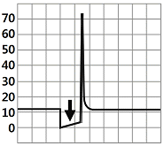
- 연료 분사구간이다.
- 드웰 구간이다.
- 점화 1차 코일에 전류가 흐르는 구간이다.
- 역기전력에 의한 서지전압 구간이다.
(정답률: 44%)
92. 교류 발전기의 특징이 아닌 것은?
- 공회전시 충전이 가능하다.
- 정류자가 없어 허용 회전속도의 한계가 높다.
- 다이오드로 정류하기 때문에 전기용량이 작지만 역류 방지에 효과가 좋다.
- 로터는 직류발전기의 계자코일과 계자철심에 해당하며 자속을 발생시킨다.
(정답률: 24%)
93. 주행 중 계기판의 충전경고등이 점등된다면 고장원인으로 거리가 먼 것은?
- 충전계통 퓨즈 단선
- 배터리의 노후
- 구동벨트 이완
- 배터리 케이블의 부식
(정답률: 53%)
94. 점화플러그의 구비조건으로 틀린 것은?
- 전기적 절연성이 좋아야 한다.
- 강력한 불꽃이 발생되어야 한다.
- 열전도성이 낮아야 한다.
- 내구성이 좋아야 한다.
(정답률: 68%)
95. 전자제어 에어컨장치에서 컨트롤 유닛의 입력신호로 틀린 것은?
- 실내온도 센서
- 외기온도 센서
- 일사량 센서
- 휠스피드 센서
(정답률: 77%)
96. 자동차의 앞면에 적색의 등화 또는 점멸등화를 설치할 수 없는 자동차는?
- 긴급자동차
- 어린이 운송용 승합자동차
- 다목적형(RV) 승용자동차
- 화약류 운송용 화물자동차
(정답률: 67%)
97. 하이브리드 자동차에서 고전압 관련 정비 시고전압을 해제하는 장치는?
- 전류 센서
- 배터리 팩
- 안전 스위치(안전 플러그)
- 프리차저 저항
(정답률: 68%)
98. 그림과 같은 논리적 회로(AND)에 대한 진리표가 틀린 것은?
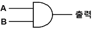
- A : 0, B : 0, 출력 = 0
- A : 0, B : 1, 출력 = 0
- A : 1, B : 0, 출력 = 1
- A : 1, B : 1, 출력 = 1
(정답률: 60%)
99. 자기 인덕턴스 0.5H의 코일에 0.01초 동안 3A의 전류가 변화하였을 때 이 코일에 유도되는 기전력은?
- 5V
- 10V
- 15V
- 150V
(정답률: 36%)
100. 전자제어 가솔린기관에서 점화장치의 구성요소가 아닌 것은?
- 파워TR
- 점화코일
- G센서
- 엔진ECU
(정답률: 72%)